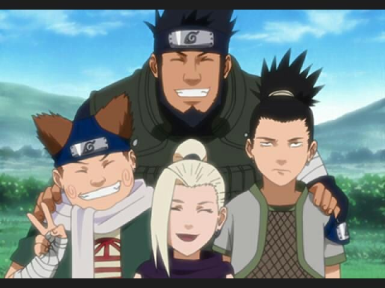

Time Asuma - Time 10
O Time Asuma, também conhecido como Time 10, é uma geração do Trio Ino-Shika-Chou (いの しか ちょうトリオ, Ino–Shika–Chou Torio). Como tal, os três membros do time são bons amigos e têm um trabalho em time excepcional, embora acabem brigando de vez em quando. Todos os três membros do Time 10 são hábeis em paralisar os adversários. Eles eram liderados por Asuma até sua morte na segunda parte. Kakashi os liderou temporariamente para ajudá-los a vingar a morte de Asuma. A equipe ainda está ativa, embora sem um líder permanente.
Junto com os outros membros dos 11 de Konoha, o Time 10 havia decidido matar Sasuke Uchiha depois que ele atacou Kumogakure em nome da Akatsuki, a fim de impedi-lo de se afundar ainda mais como um ninja renegado. No entanto, Naruto Uzumaki os persuadiu dizendo que ele iria lidar sozinho com Sasuke.
Missões Conhecidas
Capturar Baji (Apenas Anime)
- Rank: Desconhecido
- Estado: Sucesso
Em uma missão conjunta com o Time Kakashi, o Time 10 foi implantado para salvar a neta de um chefe da aldeia que foi feita refém pelo líder dos bandidos, Baji. Permitindo ser mantidos em cativeiro para que eles possam conhecer a localização dos reféns, Shikamaru entrega Ino e Chouji para localizar a sua posição para que eles possam libertar os reféns e derrotar os bandidos
Resgatar Kosuke (Apenas Anime)
- Rank: Desconhecido
- Estado: Sucesso
Enquanto eles ainda eram genin, Time Asuma foi enviado para ajudar Kosuke Maruboshi que estava sendo perseguido por um grupo de shinobi de Iwa. Usando seu trabalho em equipe, em conjunto com táticas de emboscada, eles conseguiram derrotar os perseguidores e salvar Kosuke.
Caçando a Akatsuki
- Rank: Desconhecido
- Membro Temporário: Kakashi Hatake (Jounin Líder)
- Estado: Sucesso
Time Asuma com Kakashi Hatake como líder.
Quando Asuma morreu lutando contra o membro da Akatsuki chamado Hidan, os três juraram vingança e ficaram juntos sob o nome do "Time 10", embora sem um comandante jounin. Quando se preparavam para partir no dia, a dupla tinha prometido voltar, Tsunade, no entanto, se opôs a eles de forma imprudente em busca de vingança, mesmo com o plano de Shikamaru, e os proibiu de realizar a missão. No entanto, Kakashi Hatake optou por levar o time para essa missão. A vingança do time foi consumado com a derrota de Hidan, que Shikamaru prendeu dentro da Floresta do Clã Nara, e a morte de Kakuzu, com apoio do resto do Time Kakashi.
Curiosidades
- Embora "Time Dez" (第十班) tenha o rōmaji como "Daijūppan", a palavra ainda pode ser pronunciada como "Daijippan", tal como feito por Shikadai Nara.
- Todos os membros do Time Asuma (exceto Asuma) têm brincos semelhantes, dados a eles por Asuma. Esta é uma tradição onde um Sarutobi dá aos membros dos clãs Yamanaka, Nara e Akimichi estes brincos quando eles são promovidos a chuunin.
- O nome "Ino-Shika-Chou" é uma referência a uma combinação de cartão no jogo de cartas Hanafuda, Koi-Koi; Inoshikachou usa o javali (猪, ino), o veado (鹿, shika) e a borboleta (蝶, chou).
- De acordo com Sakura Haruno, o Time 7 tem também o melhor trabalho em equipe com o Time 10.
- Quando o Time 10 foi apresentado corretamente durante os Exames Chuunin, Naruto Uzumaki comentou sobre eles com o apelido de menos-que-lisonjeiro, referindo-se ao hábito dos membros (comida, preguiça e quedinha por Sasuke Uchiha).
- No anime, antes do Terceiro Hokage apontar Asuma como líder do time, Inoichi Yamanaka pensou em se candidatar para a liderança.
Referências
Episódios
- Naruto: Shippūden episódio 398
- Naruto capítulo 35, página 7
- Naruto: Shippūden episódio 82
- Naruto: Shippūden episódio 395
- Boruto: Naruto Next Generations, episódio 38
- Naruto capitulo 328, página 13
- Naruto capítulo 533, página 12
- Naruto capítulo 331, página 16
- Naruto capítulo 39, página 5
- Naruto: Shippūden episódio 179
Disponivel aqui: Time Asuma – Wiki Naruto (Fandom)
Favicon Disponivel aqui:Naruto ícones criados por Mohamed Mbarki - Flaticon